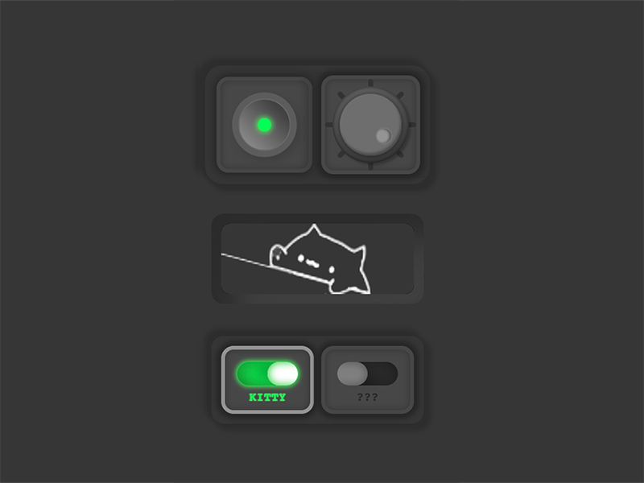
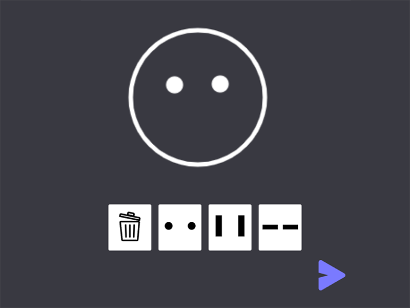
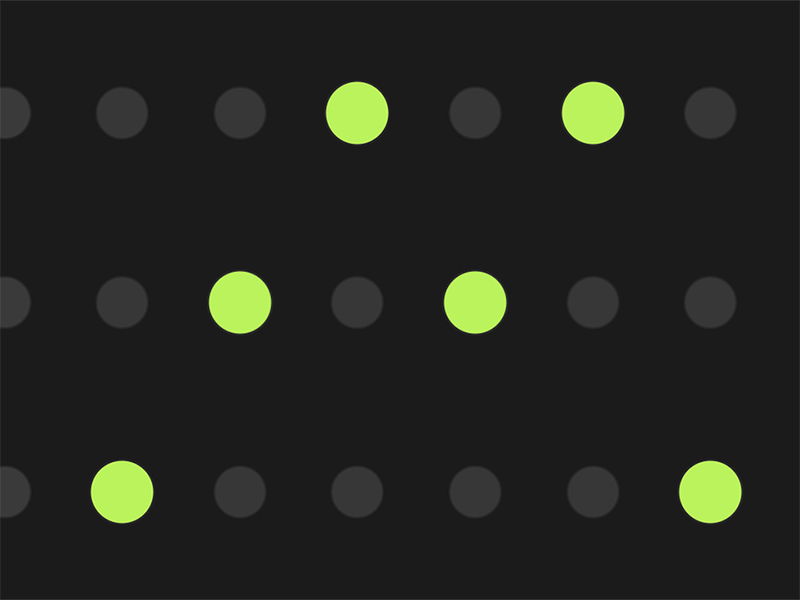
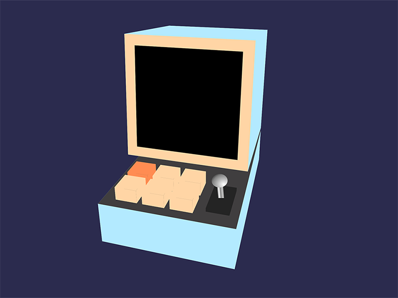
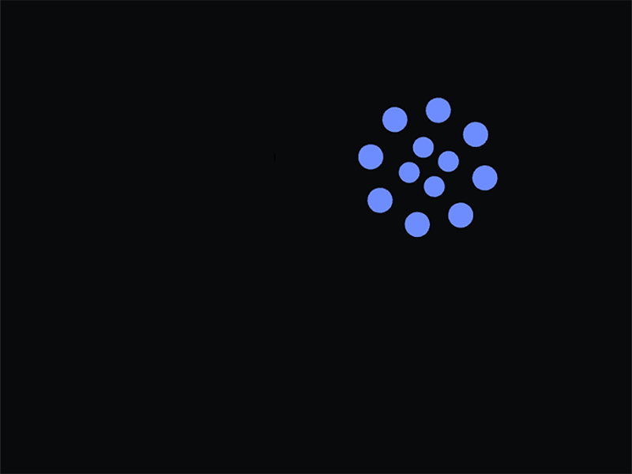
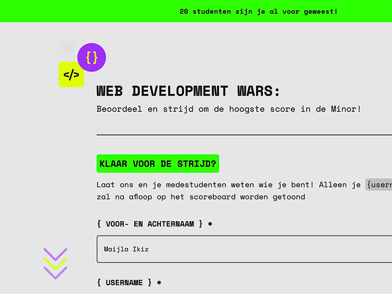

Introductie
In de minor Web Design & Development leer je interactieve toepassingen ontwerpen en bouwen met HTML, CSS en JavaScript.
In vijf vakken en twee projecten leer je alles over het web → browsers, toegankelijkheid, API’s, usability, JSON, real-time, experiment, debuggen, responsive, rapid prototyping, microinteracties, documenteren …
In de minor werken we in het studio-model. We hebben een eigen vaste ruimte waar je werkt en aan lessen en colleges deelneemt. De werklast is full-time. Je werkt 40 uur per week in de studio.
De minor is dé webdev en design minor van CMD van de Hogeschool van Amsterdam.
Impressie
Ter inspiratie, studentenwerk van de afgelopen jaren:
- 
- 
- 
- 
- 
-

- 
Iets voor jou?
Samen met bedrijven uit de creatieve industrie verkennen we de grenzen van wat er nu en straks mogelijk is op het web.
Van studenten wordt verwacht dat ze starten met gedegen kennis van HTML, CSS en JavaScript. Lees hier meer over de toelatingseisen van de minor en hoe je je kunt voorbereiden.
Ben je leergierig en nieuwsgierig? Gedreven en zelfredzaam? Heb je affiniteit met ontwerpen en techniek of wil je je technische (design) skills verdiepen? Droom je van real-time, responsive en enhancement? Of wil je dat leren? Dan is deze minor voor jou!
Deze minor is ook geschikt voor Visual Interface Designers en Interaction Designers die alles willen weten over het web, over toegankelijkheid, én over hoe code van invloed is op het ontwerpen en maken van websites.
Werkwijze
In de minor werken we in een studio model. De minor heeft een vast lokaal waar de lessen worden gegeven. Van studenten wordt verwacht dat ze in het lokaal blijven werken zoals je dat ook in een bedrijf zou doen.
De werkbelasting is full-time, 40 uur per week. Iedere dag zijn er docenten en assistenten aanwezig om studenten te begeleiden en vragen te beantwoorden.
In de minor:
- Volg je 2 vakken van 4 weken tegelijk met wekelijkse opdrachten en beoordelingen.
- In het midden van de minor kun je je uitleven in de 5-daagse hackaton (120 uur ;-).
- Je sluit de minor af met een Meesterproef van 6 weken. Je ontwerpt en bouwt individueel of in een team een project voor een opdrachtgever.
- Elke week wordt een Weekly Nerd georganiseerd, een serie presentaties, workshops en bezoeken zodat je je kan orienteren op het werkveld.
Lesprogramma
In een half jaar volg je 5 vakken en 2 projecten. De vakken hebben een focus op techniek en JavaScript, of richten zich op design en interactie met HTML en CSS. In de projecten combineer je al je kennis en vaardigheden. De globale planning van de minor:
| 2 weken | 4 weken | 120 uur | 4 weken | 6 weken |
|---|---|---|---|---|
| Web Apps from Scratch | CSS to the Rescue | Hackaton | Human Centred Design | Meesterproef |
| Browser Technologies | API | |||
| Weekly Nerd | ||||
Toelatingseisen
Voor de minor is het belangrijk dat je gedegen kennis hebt van HTML, CSS en JavaScript, en dat je al een aantal vakken en/of projecten hebt gevolgd over web development en web design.
In de minor gaan we meteen volle kracht vooruit met Web Apps From Scratch.
Lees hier meer over de toelatingseisen voor de minor en hoe je je kunt voorbereiden.
Aanmelden
De minor Web Design & Development heeft plek voor maximaal 50 studenten. Vanaf 18 september kun je je via SIS inschrijven voor de minor.
Als je niet op de HvA zit dan kun je vanaf 30 oktober inschrijven via Kies op maat.
Testimonials
Het is echt een top minor. Ik zou hem zo - zonder knipperen - nog een keer kiezen!
- De minor scoort een 8,7 in de studentenenquête.
- Voor het rooster en de faciliteiten geven studenten een 8,3.
- Studenten geven een 9,5 aan de stelling: "Ik ben binnen de minor uitgedaagd”.
- De studiebelasting en werkdruk beoordelen studenten met hoog tot zeer hoog.
- Voor de docenten, feedback en begeleiding geven studenten een 9,0.
Lees hier meer opmerkingen en feedback van studenten over de minor.
CMD Amsterdam
Communication and Multimedia Design (CMD) is een ontwerpopleiding voor digital design. Onze studenten zijn betrokken bij de ontwikkelingen in de samenleving en ontwerpen en maken digitale interactieve producten die goed aansluiten bij de behoeften van de gebruikers.
De kern van de opleiding bestaat uit interaction design, visual design en frontend development. Deze minor sluit aan bij het profiel frontend developer.
Meer informatie over CMD Amsterdam kun je vinden op cmd-amsterdam.nl